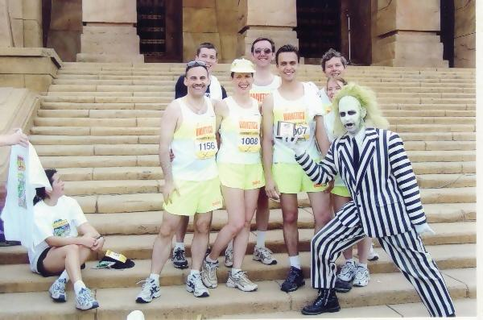

|
December 8 - Say No To Drugs! 5K/10K Griffith Park Start 8:30 A.M. $20 pre-register, $25 race day Leaving ASHO steps 7:15 A.M. http://www.saynotodrugs.com January 26, 2003 - Super Bowl 10K February 3, 2002 - Firecracker
5K/10K March 3, 2003 - Los Angeles Marathon Uniforms: Maggie handed over the hat to Andre Untiedt. Get your size requirements to him before the next order goes in. Marathon Training: LA Marathon coming up. Start doing longer runs once every other week. Build up to a 21+ mile run 3 to 4 weeks before the marathon, then wind down and rest before the race. Recruitment! Get the names of those runners to Andre Untiedt (818) 249-2914, ausys@earthlink.net. |
 Jamie's 3rd place award from Beetlejuice Backlot Run 5K/10K The Butterworths took the glory with Maggie 1st, and Jamie 3rd in their divisions! The team made quite a splash with the prize presentation on the steps in front of the whole finish line crowd. What a winning team! Ricki McGee (4th), Doug Borden, Andre Untiedt, Burt Joseph, Chris Simonds (4th) and Diane Christian made up the rest of the team, with a contingent of 6 psych busters adding to the fun. Everyone managed to survive the dinosaurs, sharks, cowboys and others at the various film sets we ran through. Ricki would have taken 3rd too if Andre hadn't stopped her for a photo op at the haunted house. (Sorry, Ricki!) Thank you to Doug for the photos. Universal Studios Backlot was fun! Race results: http://www.biologicshealth.com/html/raceresults.htm Next Race: Our very own Say No To Drugs race December 8th, with a redesigned T-shirt, is not to be missed! There are group discounts and base crew will be able to register on LRH Way for half price—this is an offer you can't refuse! Stand by for details.... |